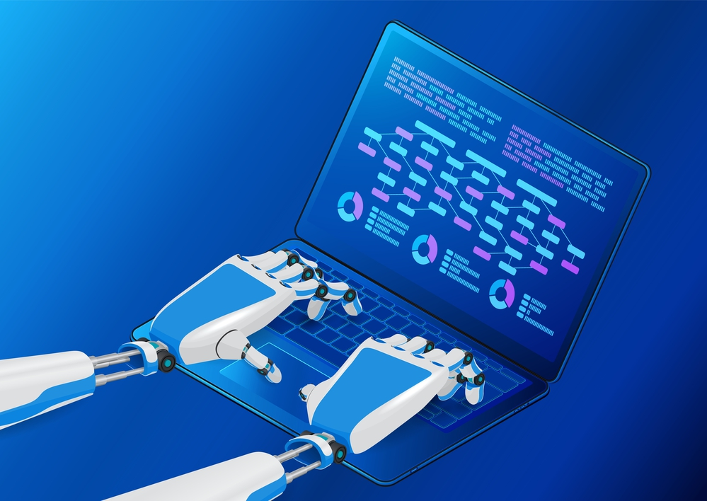

Sobre EkinIA
Es un asistente inteligente en formato app o programa que aprende cómo trabaja cada persona y le simplifica la vida: organiza el correo, agenda reuniones, resume documentos… Sobre todo ayuda a las personas que tienen dificultades para manejar un dispositivo electrónico.

Leer más
¿A que nos dedicamos?
Nosotros lo que hacemos es desarrollar soluciones a medida para los clientes utilizando la IA, creamos herramientas personalizadas con IA que automatizan las tareas, mejorar los procesos y gastar la menor cantidad de energia y recursos posibles para reducir el consumo. Ayudamos a las empresas o a personas a revisar cómo usan la tecnología, les proponemos herramientas de IA que sean fáciles de usar y les damos formación para que saquen el máximo partido sin complicaciones.
Leer más